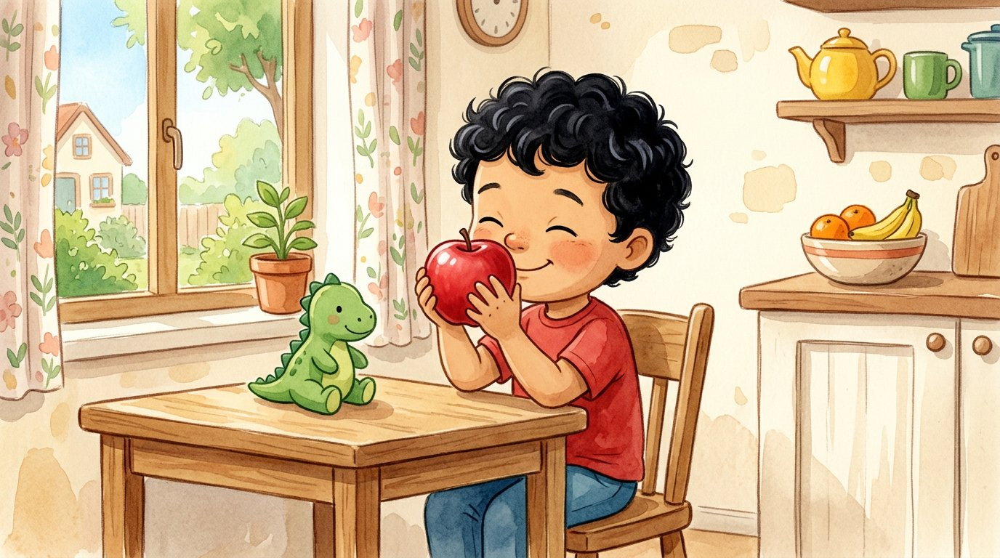
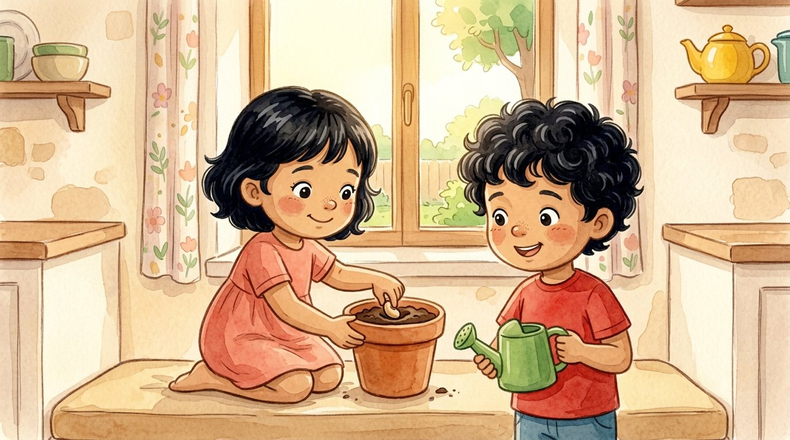
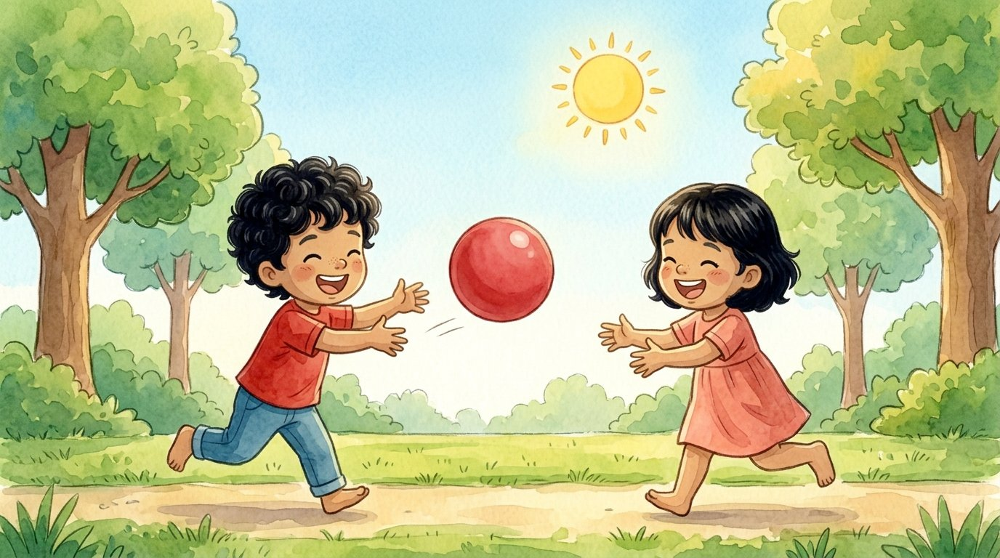
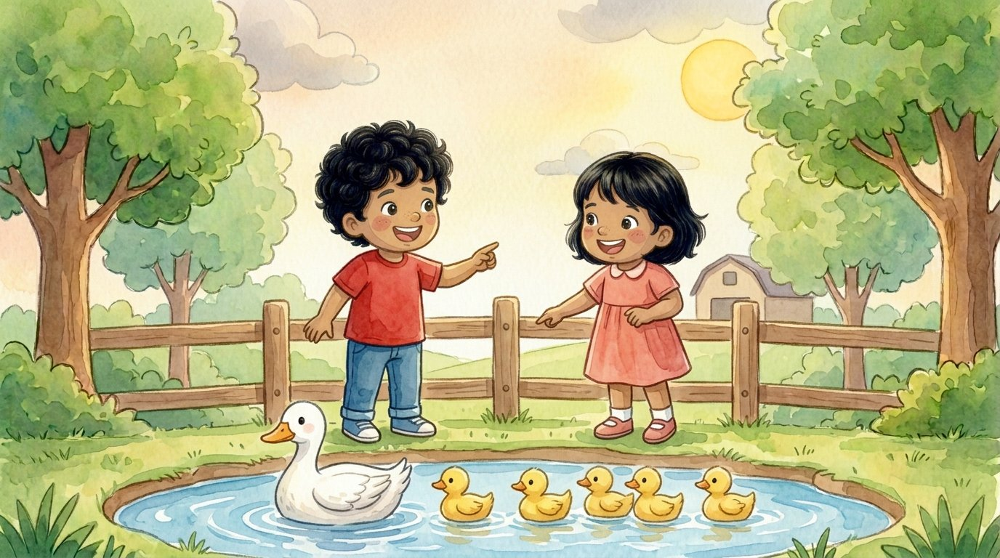
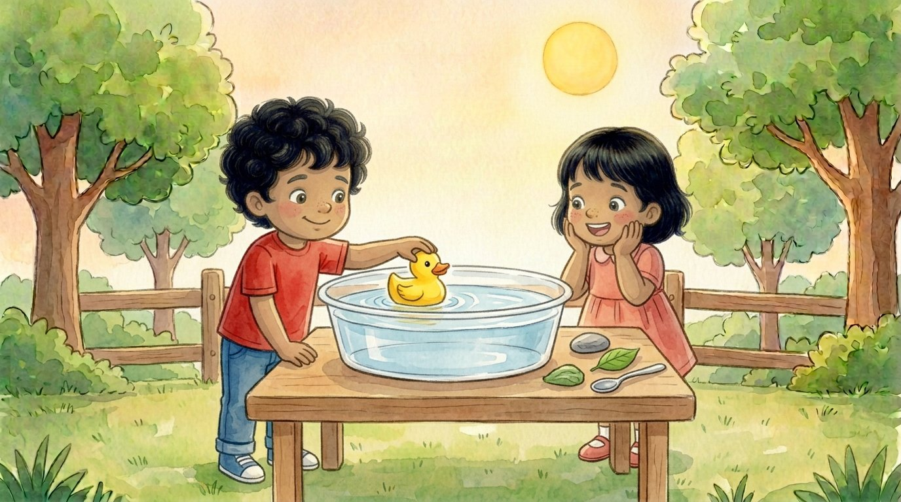
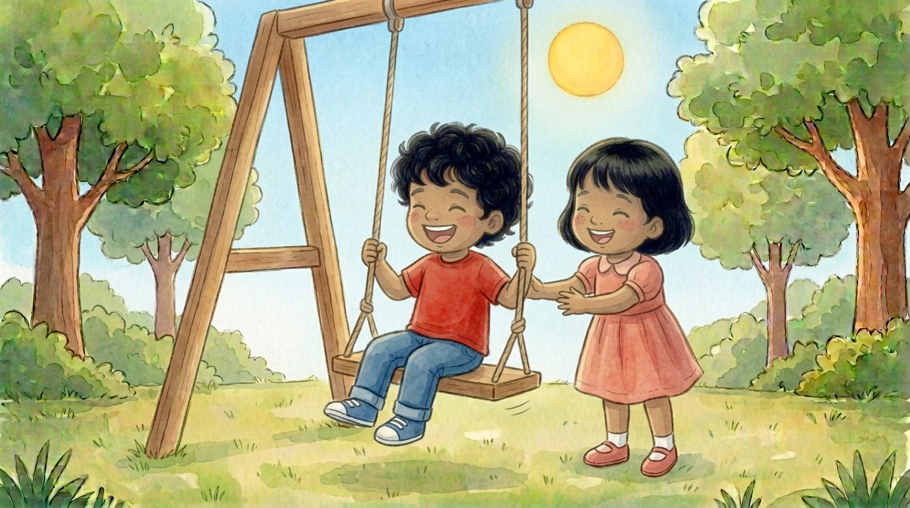
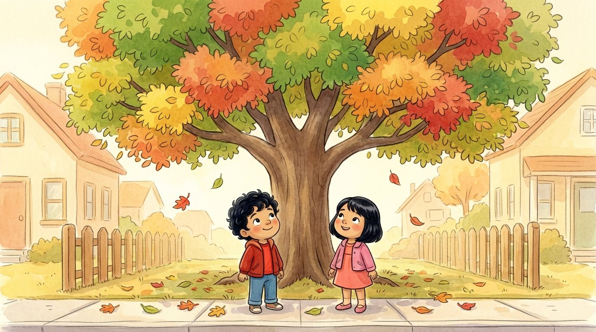
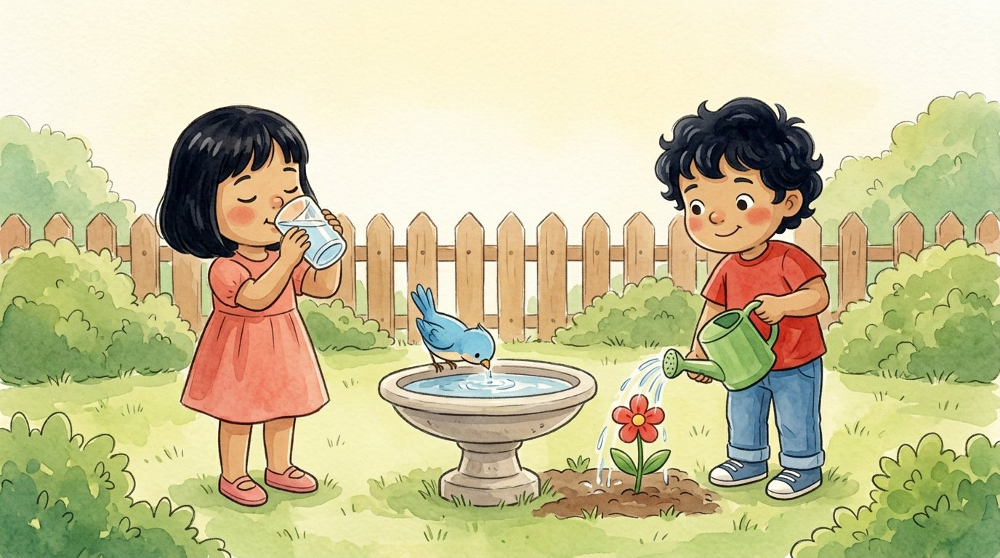

Libro · Prekínder
Ciencias
Cuentos para escuchar con Adrián y Génesis
Cuentos cortitos de dos o tres escenas. Lumi los lee en voz alta y cada palabra se ilumina mientras la dice: así los niños descubren que lo que se dice está escrito.
Toca un cuento para escucharlo.

Mis cinco sentidos
La semillita
Sol y lluvia
¿Quién es mi mamá?
¿Flota o se hunde?
El día y la noche
Las hojas del otoño
Cuidamos el agua
José M. Fernández · Claude (Anthropic) · Ilustraciones generadas con inteligencia artificial